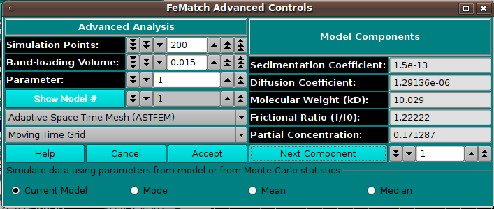

UltraScan FeMatch Advanced Controls:
This dialog may be invoked from US_FeMatch in order to set
advanced control parameters. It may also be used to cycle through
model components, showing their individual parameter values.

Functions:
-
Simulation Points: Specify simulation points.
-
Band-loading Volume: Specify a band-loading volume value.
-
Parameter: Choose a parameter value.
-
Show Model # Choose a model number.
-
(mesh type) Select from one of several mesh types, including
Adaptive Space Time (ASTFEM), Claverie, Moving Hat, user File,
or Adaptive Space Volume (ASVFEM).
-
(grid type) Select a moving-time or constant-time grid type.
-
Help Display this and other documentation.
-
Cancel Close this dialog and exit with no selections made.
-
Accept Close the dialog and communicate selections made here
to the calling dialog.
-
(model/Monte Carlo) Select one of the four choices for initial
scan partial concentrations: Current Model; MC Mode value;
MC Mean value; MC Median value.
-
Sedimentation Coefficient: Sedimentation coefficient for the
currently selected model component.
-
Diffusion Coefficient: Diffusion coefficient for the selected
component.
-
Molecular Weight (kD): Molecular weight for the selected
component.
-
Frictional Ratio (f/f0): Frictional ratio for the selected
component.
-
Partial Concentration: Partial concentration value for the
selected component.
-
Next Component: Click on this button to advance the
component index to the next value, or change the index counter to
point to the component for which the above values are to be displayed.
 Manual
Manual